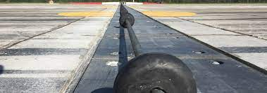

Airfields with Aircraft Arrestors
Aircraft arrestor systems are critical components for enhancing the safety of aircraft operations at various types of airfields, including military bases, joint civilian and military bases, and Navy aircraft carriers. In this article, we will provide an overview of the different types of airfields that utilize aircraft arrestors and discuss their importance in ensuring safe and efficient aircraft operations.

Military Bases
Military bases, particularly those operated by the Air Force and Navy, are equipped with aircraft arrestor systems to facilitate the safe landing of high-performance military aircraft, such as fighter jets and cargo planes. These airfields require arresting systems due to the high speeds and unique characteristics of military aircraft, which can make traditional runway landings more challenging. The use of arrestor systems at military bases helps to ensure the safety of pilots and ground personnel while minimizing the risk of damage to valuable aircraft and infrastructure.
Joint Civilian and Military Bases
Joint civilian and military bases are airfields that serve both civilian and military aircraft. These bases often have aircraft arrestor systems in place to accommodate military aircraft operations while also providing an added layer of safety for civilian aircraft in emergency situations. The presence of arrestor systems at joint bases allows for seamless integration of military and civilian air traffic while ensuring the safety of all aircraft and personnel on the ground.
Navy Aircraft Carriers
Navy aircraft carriers are unique airfields that feature arresting systems as a critical component of their flight deck operations. Due to the limited space available on an aircraft carrier's flight deck, arrestor systems are essential for rapidly decelerating aircraft during landings. These systems often consist of a series of arresting cables that are designed to catch the tailhook of an incoming aircraft, bringing it to a controlled stop in a short distance. The use of arrestor systems on aircraft carriers is crucial for ensuring the safe recovery of aircraft during at-sea operations.
Emergency Arresting Systems at Civilian Airports
While not as common as at military bases and aircraft carriers, some civilian airports also employ aircraft arrestor systems, particularly Engineered Materials Arrestor Systems (EMAS), as a safety measure for emergency situations. EMAS are installed at the end of runways and consist of crushable materials designed to decelerate an aircraft in the event of an overrun. By having an arresting system in place, civilian airports can provide an additional layer of safety for passengers and crew during emergency landings or aborted takeoffs.
International Examples of Airfields with Arrestor Systems
Aircraft arrestor systems are employed in airfields worldwide, including those operated by NATO countries, as well as other nations with advanced aviation capabilities. Some examples of international airfields with arrestor systems include:
- Royal Air Force (RAF) bases in the United Kingdom, such as RAF Lakenheath and RAF Lossiemouth
- Canadian Forces Bases, including CFB Cold Lake and CFB Bagotville
- Royal Australian Air Force (RAAF) bases, such as RAAF Williamtown and RAAF Amberley
- NATO air bases in Europe, including Ramstein Air Base in Germany and Aviano Air Base in Italy
- Various airfields operated by the Japanese Self-Defense Forces, including Misawa Air Base and Yokota Air Base
Conclusion
Aircraft arrestor systems play a vital role in ensuring the safety and efficiency of airfields across various types of facilities, including military bases, joint civilian and military bases, and Navy aircraft carriers. By providing a means for rapidly decelerating aircraft during emergency landings or aborted takeoffs, arrestor systems contribute to the safe and effective operation of airfields and the protection of pilots, passengers, and ground personnel. As the aviation industry continues to evolve, the importance of aircraft arrestor systems in maintaining safety standards at airfields worldwide remains paramount.